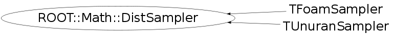

Function Members (Methods)
This is an abstract class, constructors will not be documented.
Look at the header to check for available constructors.
public:
| virtual | ~DistSampler() |
| virtual bool | Generate(unsigned int nevt, ROOT::Fit::UnBinData& data) |
| virtual bool | Generate(unsigned int nevt, const int* nbins, ROOT::Fit::BinData& data, bool extend = true) |
| bool | Generate(unsigned int nevt, int nbins, double xmin, double xmax, ROOT::Fit::BinData& data, bool extend = true) |
| virtual TRandom* | GetRandom() |
| virtual bool | Init(const char* = "") |
| virtual bool | Init(const ROOT::Math::DistSamplerOptions& opt) |
| unsigned int | NDim() const |
| const ROOT::Math::IMultiGenFunction& | ParentPdf() const |
| const double* | Sample() |
| virtual bool | Sample(double* x) |
| virtual double | Sample1D() |
| virtual bool | SampleBin(double prob, double& value, double* error = 0) |
| virtual bool | SampleBins(unsigned int n, const double* prob, double* values, double* errors = 0) |
| virtual void | SetArea(double) |
| virtual void | SetFunction(const ROOT::Math::IGenFunction& func) |
| virtual void | SetFunction(const ROOT::Math::IMultiGenFunction& func) |
| virtual void | SetMode(double) |
| virtual void | SetRandom(TRandom*) |
| void | SetRange(const ROOT::Fit::DataRange& range) |
| void | SetRange(const double* xmin, const double* xmax) |
| void | SetRange(double xmin, double xmax, int icoord = 0) |
| virtual void | SetSeed(unsigned int) |
protected:
| virtual void | DoSetFunction(const ROOT::Math::IMultiGenFunction& func, bool copy) |
| bool | IsInitialized() |
| const ROOT::Fit::DataRange& | PdfRange() const |
Data Members
private:
| vector<double> | fData | internal array used to cached the sample data |
| const ROOT::Math::IMultiGenFunction* | fFunc | internal function (ND) |
| bool | fOwnFunc | flag to indicate if the function is owned |
| ROOT::Fit::DataRange* | fRange | data range |
Class Charts
{kind=link}
{kind=link}
{kind=link}
{kind=link}

Function documentation
void SetFunction(Function & func, unsigned int dim)
set the parent function distribution to use for sampling (generic case)
DoSetFunction(const ROOT::Math::IMultiGenFunction& func, bool copy)
need to clone to avoid temporary
void SetFunction(const ROOT::Math::IGenFunction& func)
set the parent function distribution to use for random sampling (one dim case)
unsigned int NDim() const
return the dimension of the parent distribution (and the data)
{ return fData.size(); }bool Init(const char* = "")
initialize the generators with the given algorithm
Implemented by derived classes who needs it
(like UnuranSampler)
If nothing is specified use default algorithm
from DistSamplerOptions::SetDefaultAlgorithm
{ return true;}bool Init(const ROOT::Math::DistSamplerOptions& opt)
initialize the generators with the given option
which my include the algorithm but also more if
the method is re-impelmented by derived class
The default implementation calls the above method
passing just the algorithm name
void SetRandom(TRandom* )
Set the random engine to be used
To be implemented by the derived classes who provides
random sampling
{}void SetSeed(unsigned int )
Set the random seed for the TRandom instances used by the sampler
classes
To be implemented by the derived classes who provides random sampling
{}TRandom * GetRandom()
Get the random engine used by the sampler
To be implemented by the derived classes who needs it
Returns zero by default
{ return 0; }void SetMode(double )
set the mode of the distribution (could be useful to some methods) implemented by derived classes if needed
{}void SetArea(double )
set the normalization area of distribution implemented by derived classes if needed
{}const ROOT::Math::IMultiGenFunction & ParentPdf() const
get the parent distribution function (must be called after setting the function)
double Sample1D()
sample one event in one dimension
better implementation could be provided by the derived classes
Sample(double* x)
bool SampleBin(double prob, double& value, double* error = 0)
sample one bin given an estimated of the pdf in the bin
(this can be function value at the center or its integral in the bin
divided by the bin width)
By default do not do random sample, just return the function values
Typically Poisson statistics will be used
bool SampleBins(unsigned int n, const double* prob, double* values, double* errors = 0)
sample a set of bins given a vector of probabilities
Typically multinomial statistics will be used and the sum of the probabilities
will be equal to the total number of events to be generated
For sampling the bins indipendently, SampleBin should be used
bool Generate(unsigned int nevt, ROOT::Fit::UnBinData& data)
generate a un-binned data sets (fill the given data set)
if dataset has already data append to it
bool Generate(unsigned int nevt, const int* nbins, ROOT::Fit::BinData& data, bool extend = true)
generate a bin data set .
A range must have been set before (otherwise inf is returned)
and the bins are equidinstant in the previously defined range
bin center values must be present in given data set
If the sampler is implemented by a random one, the entries
will be binned according to the Poisson distribution
It is assumed the distribution is normalized, otherwise the nevt must be scaled
accordingly. The expected value/bin nexp = f(x_i) * binArea/ nevt
Extend control if use a fixed (i.e. multinomial statistics) or floating total number of events
bool Generate(unsigned int nevt, int nbins, double xmin, double xmax, ROOT::Fit::BinData& data, bool extend = true)
same as before but passing the range in case of 1 dim data
bool IsInitialized()
check if generator have been initialized correctly and one can start generating
const ROOT::Fit::DataRange & PdfRange() const
return the data range of the Pdf . Must be called after setting the function